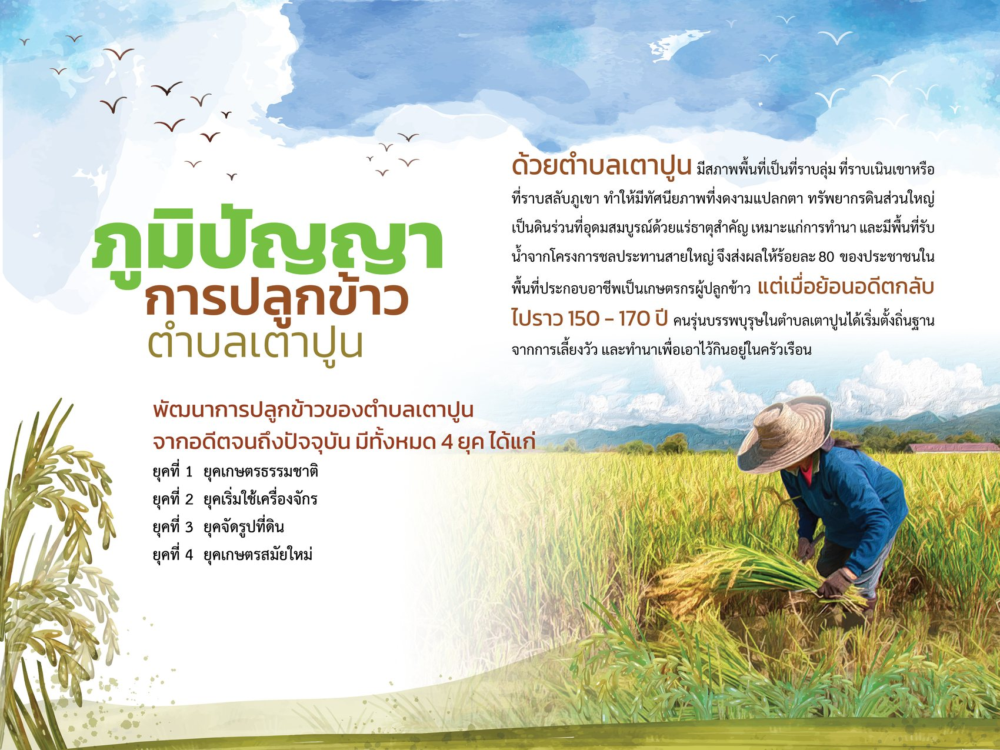
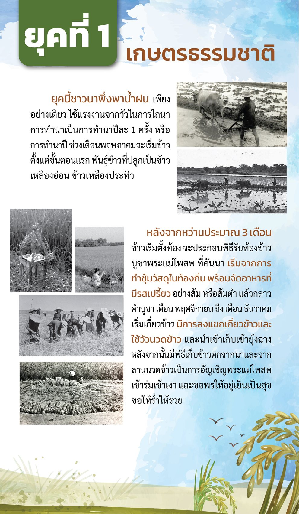
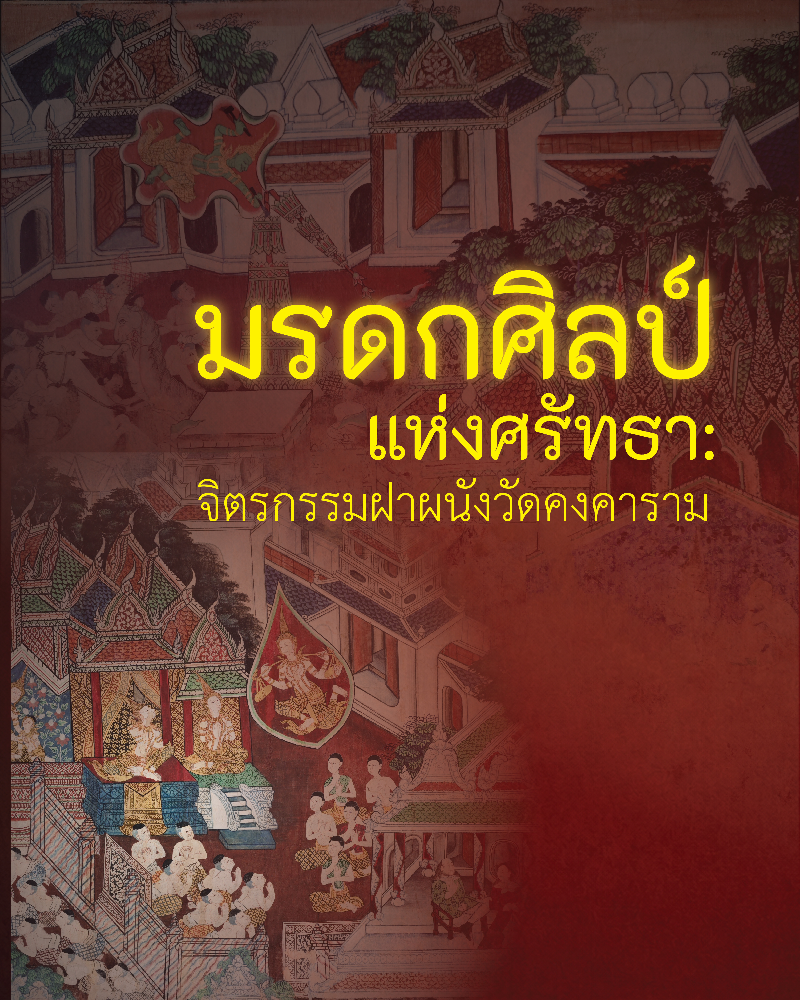

ชุดสื่อดิจิทัลผสมผสาน 5 รูปแบบ ที่พาคุณเดินตามรอยชุมชนมอญโพธาราม ตั้งแต่แผนที่นำทาง เรื่องเล่าประวัติศาสตร์ อาหารผ่าน E-Menu ภูมิปัญญาชาวนา ไปจนถึงจิตรกรรมฝาผนังที่ถอดรหัสผ่าน Interactive Visual Storytelling — ออกแบบเพื่อการท่องเที่ยวเชิงวัฒนธรรมอย่างยั่งยืน
แผนที่ดิจิทัลแบบปฏิสัมพันธ์ แตะหมุดหรือเลือกจากรายการ เพื่อสำรวจชุมชนมอญ วัดมอญ และศูนย์วัฒนธรรมพื้นถิ่นทั่วอำเภอโพธาราม พร้อมระยะทางและเวลาแนะนำ นับจากจุดเริ่มต้นเส้นทาง
ขอบเขตพื้นที่ศึกษา: อำเภอโพธารามสื่อกราฟิกเคลื่อนไหวบอกเล่าประวัติความเป็นมาของชาวมอญ ตั้งแต่การอพยพเข้าสู่ลุ่มแม่น้ำแม่กลอง จนถึงการตั้งถิ่นฐานที่โพธารามในปัจจุบัน — เลื่อนดูเส้นเวลาด้านล่าง
ขอบเขตพื้นที่ศึกษา: อำเภอโพธารามสื่อกราฟิกเคลื่อนไหวความยาวเต็ม บอกเล่าการอพยพ ตั้งถิ่นฐาน และสืบสานวัฒนธรรมมอญแห่งโพธาราม ผลิตขึ้นเป็นส่วนหนึ่งของชุดสื่อดิจิทัลที่ 2 ของโครงการ
ชาวมอญอพยพจากเมืองเมาะตะมะเข้าสู่สยาม หนีภัยสงคราม ตั้งถิ่นฐานตามลุ่มแม่น้ำสำคัญ
กลุ่มมอญบางส่วนเลือกลุ่มน้ำแม่กลองที่โพธาราม เพราะภูมิประเทศคล้ายบ้านเกิด เหมาะแก่การทำนา
ก่อตั้งวัดคงคารามและวัดมอญอื่น ๆ เป็นศูนย์กลางศรัทธาและศิลปวัฒนธรรมของชุมชน
ประเพณีสงกรานต์มอญ ภาษา และหัตถกรรม ยังคงสืบทอดควบคู่กับการท่องเที่ยวเชิงวัฒนธรรม
หนังสือภาพเล่าเรื่องราวอาหารมอญและวัฒนธรรมการกิน ผ่านครัวเรือนและตลาดในชุมชน พลิกหน้าหนังสือหรือเลือกจากรายการ เพื่ออ่านเรื่องราวเบื้องหลังแต่ละเมนู
ขอบเขตพื้นที่ศึกษา: อำเภอโพธารามตำบลเตาปูนมีสภาพพื้นที่ราบลุ่มถึงราบเนินเขา ดินร่วนอุดมสมบูรณ์และมีน้ำจากโครงการชลประทานสายใหญ่ ทำให้ประชาชนกว่าร้อยละ 80 ประกอบอาชีพทำนา ย้อนไปกว่า 150–170 ปี บรรพบุรุษเริ่มตั้งถิ่นฐานจากการเลี้ยงวัวและทำนาเพื่อยังชีพ ก่อนจะพัฒนาการปลูกข้าวต่อเนื่องมาทั้งหมด 4 ยุค
ขอบเขตพื้นที่ศึกษา: ตำบลเตาปูน อำเภอโพธาราม

อ่านและถอดรหัสจิตรกรรมฝาผนังพื้นหลังสีครามอันเลื่องชื่อของวัดคงคาราม ผ่านการเล่าเรื่องด้วยภาพแบบ Interactive Visual Storytelling ที่เรียบเรียงเรื่องราวทศชาติชาดกและคติธรรมประจำแต่ละผนัง เลือกผนังจากผังพระอุโบสถหรือแถบภาพ เพื่อสำรวจความหมายเบื้องหลังภาพวาดแต่ละจุดในพระอุโบสถ
ขอบเขตพื้นที่ศึกษา: วัดคงคาราม ตำบลคลองตาคต อำเภอโพธาราม
จิตรกรรมฝาผนังภายในพระอุโบสถวัดคงคาราม เล่าเรื่องทศชาติและพุทธประวัติผ่านผนังทั้ง ๑๗ ช่อง เลือกผนังจากผังพระอุโบสถหรือแถบภาพด้านล่าง เพื่ออ่านเรื่องราวและดูตำแหน่งของภาพบนผนังจริง
แตะหมายเลขบนผังเพื่อเลือกผนัง · วงเส้นประ = ยังไม่มีภาพ
"แนวทางการออกแบบและพัฒนาสื่อดิจิทัลแบบผสมผสานที่รองรับการพัฒนาเศรษฐกิจสร้างสรรค์บนฐานอัตลักษณ์และวัฒนธรรมท้องถิ่นเพื่อการท่องเที่ยวยั่งยืน : กรณีศึกษาอำเภอโพธาราม จังหวัดราชบุรี"